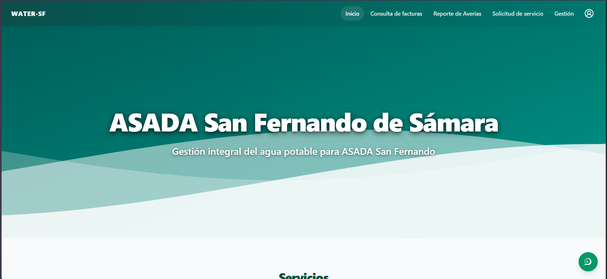
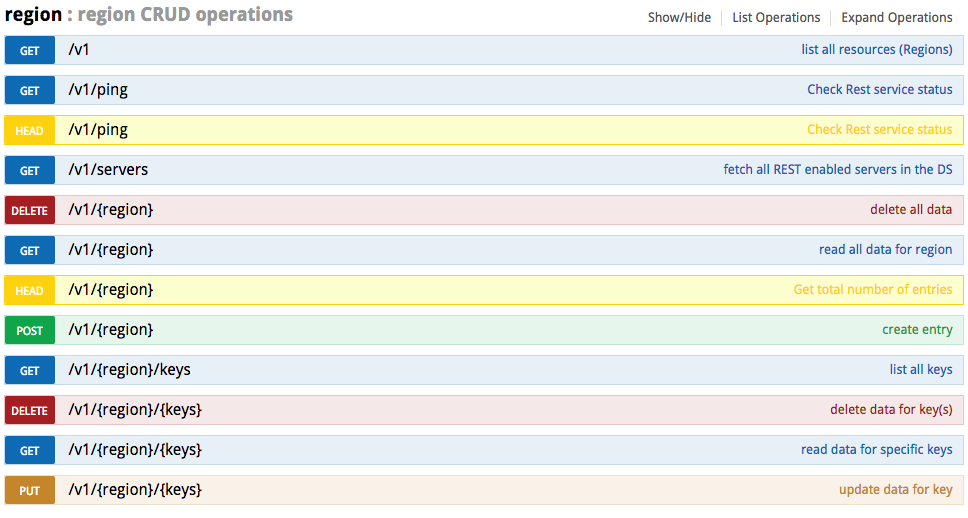
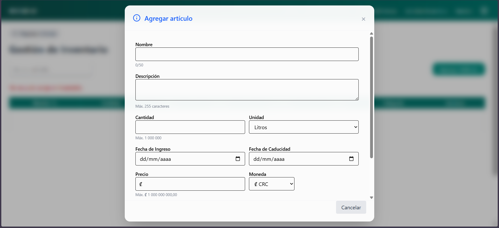

Ingeniería en Sistemas de Información
Universidad Nacional (UNA) — Estudiante de cuarto año
- Desarrollo web con Node.js, TypeScript y React
- Consumo y construcción de APIs REST
- Modelado relacional y consultas SQL
Fullstack • Sámara, Guanacaste — Costa Rica
Iván Agüero Acosta, estudiante de ultimo año de Ingeniería en Sistemas de Información (Universidad Nacional). con experiencia en proyectos desarrollando plataformas web Node.js, TypeScript, React y MariaDB, aplicando Scrum y buenas prácticas, capacidad analítica y orientación a resultados.
✔ Node.js + TypeScript ✔ NestJS + TypeORM ✔ MariaDB / SQL ✔ React + TypeScript
Formación y práctica técnica aplicada en cursos y proyectos.
Universidad Nacional (UNA) — Estudiante de cuarto año
TEFL Costa Rica — Estudiante por 7 años
Fullstack con prácticas de equipo
Técnicas y blandas. Lo que uso en proyectos reales (académicos) y trabajo en equipo.
APIs REST, TypeORM, estructura por servicios y validaciones.
UI con React + TypeScript, componentes y consumo de APIs.
SQL/MariaDB + trabajo colaborativo con Scrum y fundamentos DevOps.
Nivel y capacidades específicas.
Nivel básico–intermedio
Nivel intermedio - avanzado
Cada proyecto incluye descripción breve, tecnologías, rol y multimedia (imagen + links).
Aplicación web para gestión administrativa. Se desarrollaron componentes backend y frontend usando Node.js + TypeScript, TypeORM para persistencia y React + TypeScript para la interfaz. Se implementaron endpoints REST y consumo desde el cliente, trabajando bajo Scrum con entregas iterativas.

API con estructura por controladores y servicios, enfocada en consistencia de endpoints y validación de datos. Uso de TypeORM para entidades/relaciones y consultas a base de datos SQL. Enfoque en claridad, manejo de errores y mantenibilidad.

Interfaz web con navegación por secciones y componentes reutilizables. Enfoque en organización visual, formularios con validación, consumo de API y manejo de estados (carga/éxito/error). Diseñado para ser responsivo y legible.

Si no tenés empresa aún, esto se presenta como experiencia por proyectos y cursos de ingeniería.
Rol: Backend / Fullstack • Trabajo bajo Scrum
Enfoque: backend, frontend y bases de datos
Certificación • Trabajo colaborativo
¿Hablamos? Podés escribirme por cualquiera de estos medios.
Estoy abierto a oportunidades de práctica, proyectos freelance o colaboraciones. No dudes en contactarme para cualquier consulta o propuesta.